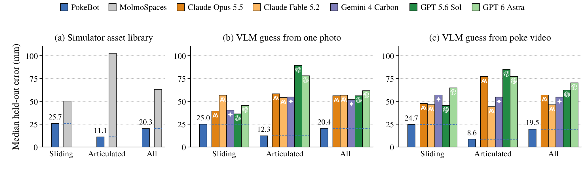
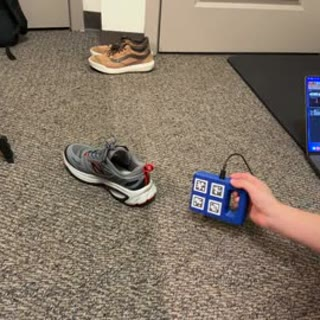
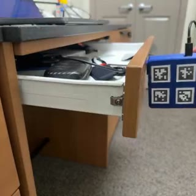
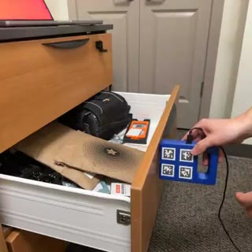
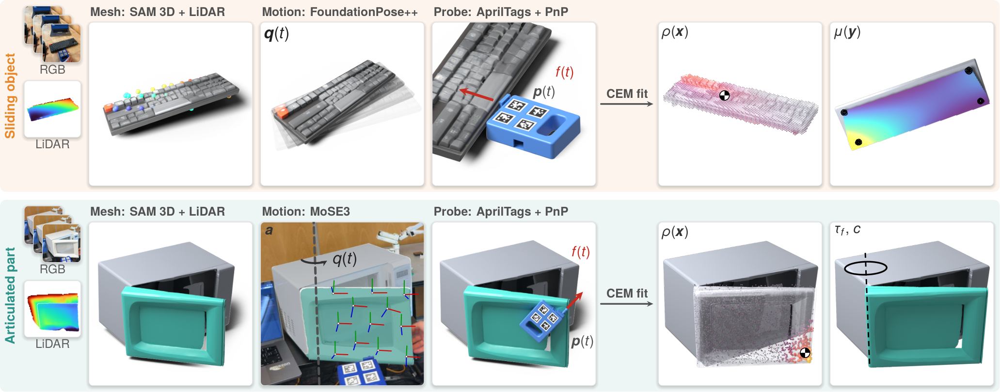
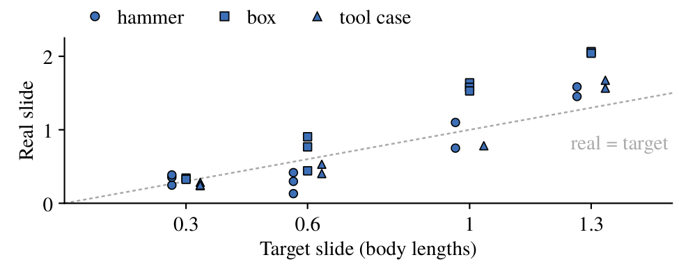
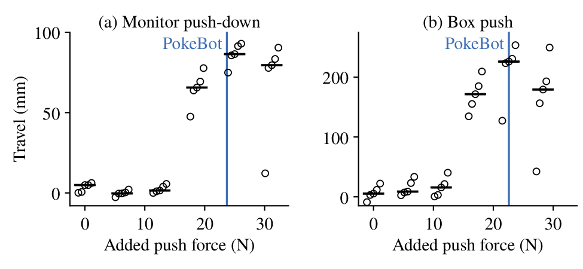

Overview video
Abstract
Visual reconstruction tools for real2sim recover object shapes, but appearance alone does not uniquely determine interaction physics properties like friction or mass distribution. We introduce PokeBot, a cheap and accessible framework which turns human-driven pokes with force reading and single-phone captures into simulator assets rich in interaction physics that are useful for real2sim2real manipulation. PokeBot provides the missing interaction measurements: a person pushing objects with a US$20 force probe and a phone/tablet with LiDAR depth. Our key insight is that foundation vision models can now recover object geometry and motion from a phone's color video and depth, while humans can choose informative pushes from our strong object interaction intuitions. Together, these enable system identification with a single force sensor, without motion capture, multi-axis force/torque sensors or robots. PokeBot scales to complex environments and objects. Paired with recent advances in monocular agentic scene-reconstruction methods, PokeBot identifies and produces entire structured scenes with sliding and articulated objects, such as a kitchen counter or an office desk. Across 404 held-out pokes on 35 objects and articulated parts, 21 of them in 3 scanned scenes, the fitted twins cut the unseen interaction motion error by at least 58% compared with assets whose physics come from VLM guesses. We also demonstrate sim2real transfer of PokeBot assets in 93 real robot rollouts across two different embodiments.
Results
Median held-out error in mm, lower is better.

Across 404 held-out pokes on 35 objects and articulated parts, the fitted twins cut the unseen interaction motion error by at least 58% compared with assets whose physics come from VLM guesses. PokeBot predicts held-out pokes with a median error of 20.4 mm, against 51.9 mm to 61.6 mm for the five VLMs.
Contact and coast
| In contact | Coasting | |||||
|---|---|---|---|---|---|---|
| Source of θ | Sliding | Articulated | All | Sliding | Articulated | All |
| Claude Opus 5.5 | 33.0 | 40.6 | 36.9 | 8.1 | 6.6 | 8.0 |
| Claude Fable 5.2 | 32.7 | 42.0 | 40.9 | 8.8 | 6.8 | 8.1 |
| PokeBot | 19.6 | 8.4 | 12.7 | 8.9 | 5.6 | 7.8 |
While the probe pushes, the error of the guesses is about three times that of PokeBot (36.9 to 40.9 mm against 12.7 mm). During the free coast after the probe releases contact, the guesses and PokeBot have nearly the same error (8.0 to 8.1 mm against 7.8 mm).
Objects
Select an object to see how PokeBot turns it into a simulator-ready asset.
 Mechanical keyboard (wood)
Mechanical keyboard (wood)
 Apple keyboard
Apple keyboard
 JLCPCB box
JLCPCB box
 PLA box (UR desk)
PLA box (UR desk)
 Kitchen drawer, top left
Kitchen drawer, top left
 Mechanical keyboard
Mechanical keyboard

Grey shoe Desk drawer, left top
Desk drawer, left top
 Brown shoe
Brown shoe
 Tool case (UR desk)
Tool case (UR desk)
 Hammer (UR desk)
Hammer (UR desk)

Desk drawer, middle Desk drawer, left middle
Desk drawer, left middle
 Desk drawer, left bottom
Desk drawer, left bottom
 Desk drawer, right top
Desk drawer, right top

Desk drawer, right middle Desk drawer, right bottom
Desk drawer, right bottom
 Kitchen drawer, left bottom
Kitchen drawer, left bottom
 Cabinet door
Cabinet door
 Microwave door
Microwave door
 Microwave door, free swing
Microwave door, free swing
 MacBook lid
MacBook lid
 Desk monitor
Desk monitor
 Filament box
Filament box
 Stack of books
Stack of books
 Barbecue bottle
Barbecue bottle
 Charging deck
Charging deck
 Headphone case
Headphone case
 Laptop on stands
Laptop on stands
 MacBook (wood)
MacBook base
MacBook (wood)
MacBook base
 Scissors
Scissors
 3M tape
3M tape
 Toolbox
Toolbox
 Heavy box
Heavy box
Method
PokeBot works in four steps.
1Capture
A person pokes each object with a handheld force probe while a phone or tablet records RGB video and LiDAR depth.
A 24-bit ADC reads the load cell at 320 Hz, and an ESP32 streams the readings to a laptop.

2Track
Off-the-shelf vision models reconstruct and track every object and articulated part.
SAM 3D builds the mesh from one RGB photo and the LiDAR point map, and FoundationPose++ tracks it through the video.

3Identify
The recorded forces are replayed at the measured contact points in a JAX rigid-body simulator.
A CEM search fits each object's mass distribution and friction map, or each joint's friction and damping, until the simulated motion matches the tracked motion.

4Use
Robots plan on the resulting assets in simulator and execute on the real objects.
For multi-object scenes, we rebuild the whole scene in simulation from one RGB + LiDAR capture.

Robot trials
93 real rollouts on two robots use the fitted twins.

Over 28 strikes, the real slide follows the target (Pearson r = 0.91), and the objects stop 0.25 body lengths from the target on average.

At half of the PokeBot force or less, the screen moves at most 6 mm and the box at most 40 mm in all 30 runs.
Release tasks
The robot strikes and lets go, and the object coasts.
Force tasks
The robot must push with the right force.
Transfer
Plans made in the twin run on the real robot.